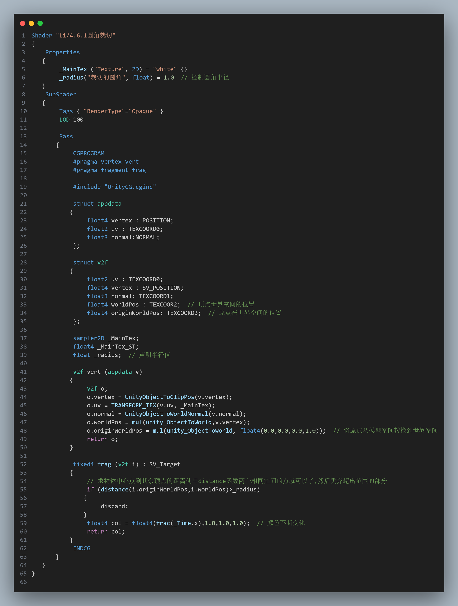

4.5.1 顶点上的其他信息
3.切线与副切线
坐标系的差异:OpenGL(右手系)和DX(左手系)
获取世界空间切线和副切线
坐标系的差异:OpenGL(右手系)和DX(左手系)
获取世界空间切线和副切线
分析:不受到这些变化的影响,所以就是一个绝对值,那就是球形范围外的裁切,只要半径超过某个值就裁切,我们可以指定这个半径来控制圆角

结果:颜色变化解决了,但是这个圆角依然还不行,并且会受到旋转,缩放的影响.
学习资料:计划明天按照这个博主的尝试一下
学习资料